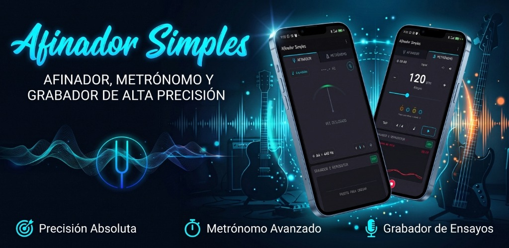

Afinador Simples
Afinador Cromático de Alta Precisión • Metrónomo Profesional • Grabador de Ensayos
Una suite acústica completa diseñada para músicos de escenario, estudio y ensayo. Integra detección matemática instantánea de tono con tolerancia de 1 centésima, metrónomo interactivo con selector de tiempos clásicos italianos y un grabador de ensayos con visualización de ondas vivas sin salir de la misma pantalla.
Incluye el Cuatro Venezolano con su tradicional afinación reentrante (Cambur Pintón: La3, Re4, Fa#4, Si3), además de Guitarra (6 cuerdas), Bajos eléctricos (4 y 5 cuerdas con Si grave), Ukelele, Cavaquinho, Mandolina, Banjo (5 cuerdas), Violín, Violonchelo y Modo Cromático libre.